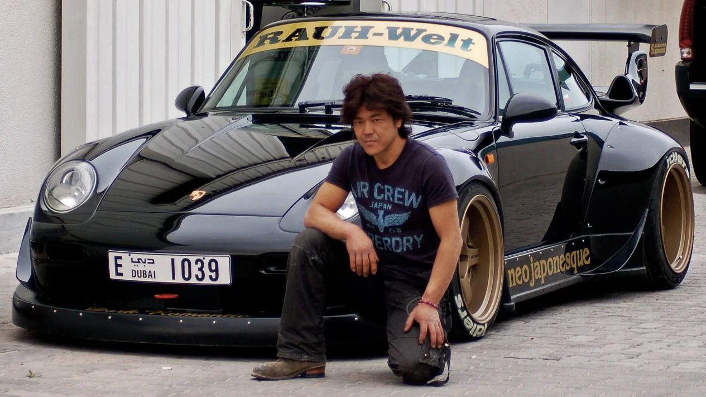
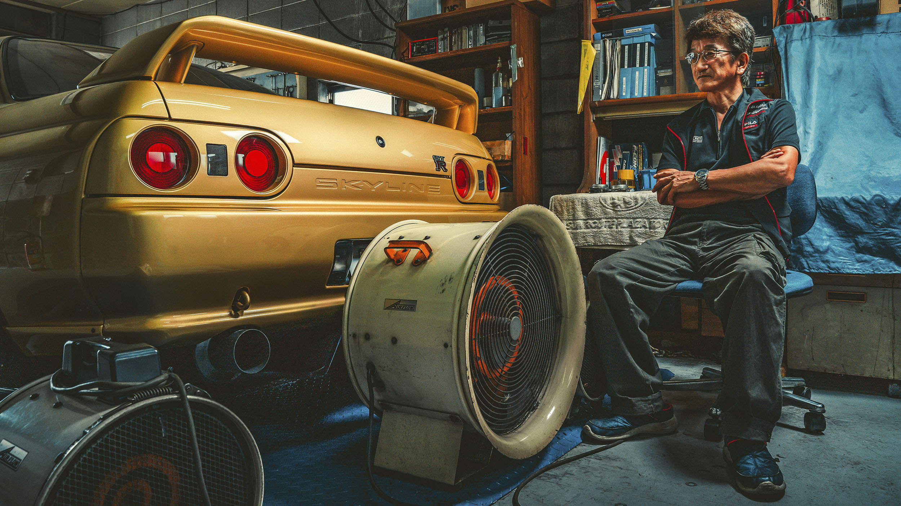

Arte do Akira Nakai
Akira Nakai é um afinador automotivo japonês, fundador da empresa de afinação de reposição da Porsche RAUH-Welt BEGRIFF, especializado no design e instalação de kits de carroceria larga personalizados para modelos Porsche clássicos e modernos.

Smokey" Nagata
"Smokey" Nagata, seu dono e proprietário da customizadora Top Secret, foi flagrado pela polícia acelerando o Supra dourado a nada menos que 317 km/h em uma rodovia pública da Inglaterra.

Porsche Cayenne Coupé EV: como pode ser a versão elétrica
A Porsche anunciou nesta quinta-feira (21) que iniciou a entrega da segunda geração do Macan no Brasil, marcando a estreia de suas versões totalmente elétricas no mercado nacional. Agora, o SUV esportivo oferece tanto modelos a combustão quanto opções elétricas.